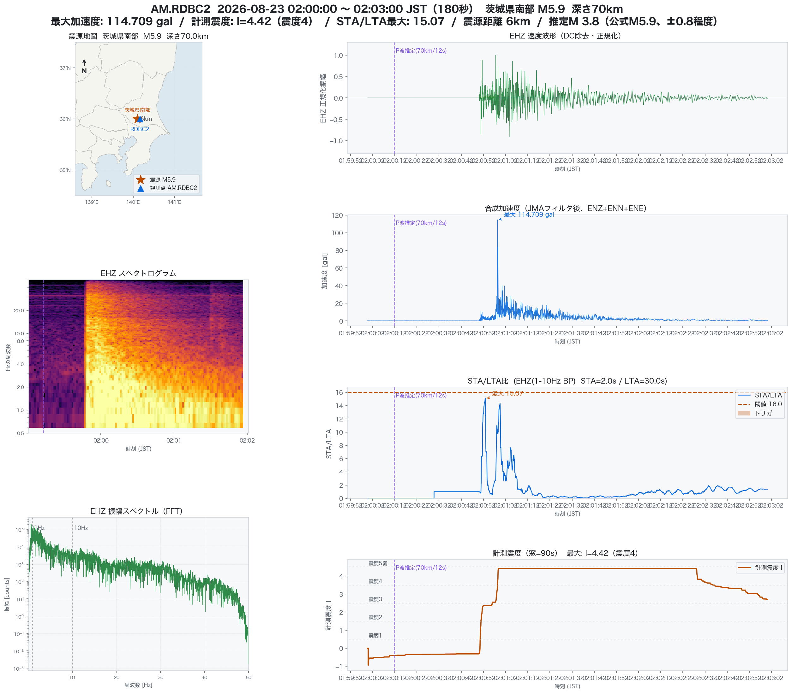
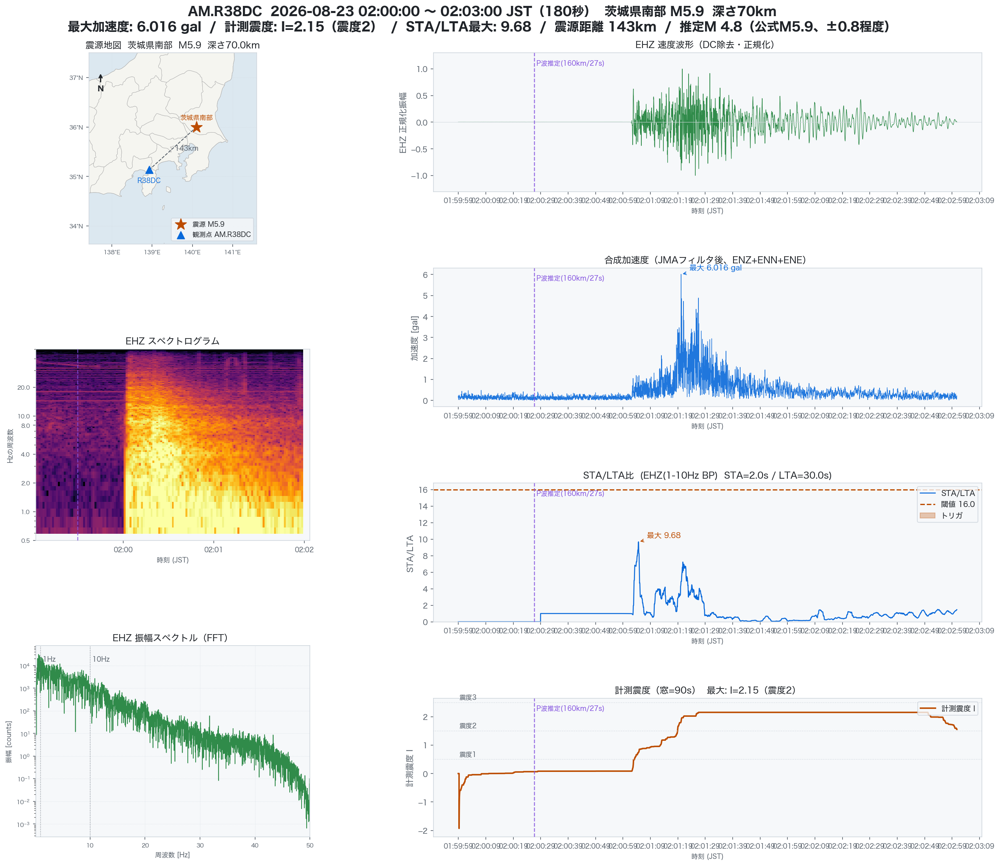

Seismic Observation · 2026-08-23
2026年8月23日2時00分発生の茨城県南部M5.9・震度5弱について、震源からわずか6kmのRaspberry Shake公開観測点RDBC2の実測波形と、自局R38DC（静岡県、震源距離160km）の実測波形をまとめた記録。
震源直近のRaspberry Shake公開観測点RDBC2（茨城県牛久市、緯度36.00°/経度140.16°）のFDSN公開データを取得し、本震の実波形を解析した。水平距離はわずか6km—深さ70kmとあわせた震源距離は70km。

震源が深さ70kmとやや深いため、水平距離6kmでも主要動の到達は本震発生から1分弱後。PGA・計測震度ともに02:00:58頃にピーク（I=4.42）を迎え、そこから100秒程度かけて緩やかに減衰している。STA/LTA比・閾値16は自局R38DCと同じ解析条件（STA2秒/LTA30秒）を機械的に適用した参考値で、RDBC2運用者の実際のアラート設定を示すものではない。
| 震度 | 都県 |
|---|---|
| 5弱 | 茨城県・埼玉県・千葉県・東京都 |
| 4 | 福島県・栃木県・群馬県・神奈川県 |
| 3 | 宮城県・新潟県・山梨県・長野県・静岡県 |
| 2 | 山形県 |
| 1 | 青森県・岩手県・秋田県・岐阜県・愛知県・三重県・滋賀県・兵庫県 |
深さ70kmのやや深い地震のため、震源直上だけでなく関東広域（茨城・埼玉・千葉・東京）で震度5弱を観測。近畿地方（兵庫県）まで震度1の揺れが到達しており、深発地震特有の広範囲な有感域を示している。
自局R38DC（緯度35.14°/経度138.93°）から震源までの水平距離は143km、深さ70kmとあわせた震源距離は160km—RDBC2（6km）と比べれば遠方だが、震源近傍の三島・箱根方面とほぼ同程度の距離帯にあたる。「震源距離」は地表上の水平距離ではなく、観測点と地下の震源（深さ70km）を結んだ3次元的な直線距離（√水平距離²+深さ²）である点に注意。

リアルタイムのSTA/LTAトリガは02:01:02に検出（震度階級1・計測震度I=0.98）—この時点の値自体は正しいが、震源距離160kmではP波とS波（主要動）の到達に数十秒の時間差があり、トリガはS波到達前の初期微動段階で確定していた。STA/LTA比自体は02:01:04に最大9.68を記録しているが、揺れの本体（PGA最大6.0gal）はその後の02:01:20頃、計測震度の最大値（I=2.15）はさらに後の02:01:26頃に到達している。90秒窓で計算し直した計測震度の最大値はI=2.15（震度2）。トリガ確定時点の瞬間値と、主要動を含めた事後解析の最大値は別の量であることを示す一例として記録する。
計測震度の算出に用いる時間窓の長さは、気象庁告示（平成8年気象庁告示第4号）上は「地震動が継続している時間」とのみ定義され、具体的な秒数の規定はない。自局の解析実装は90秒窓を採用しているが、参考として60秒窓でも再計算したところ、RDBC2・R38DCとも最大値はI=4.42（震度4）・I=2.15（震度2）で変化しなかった—今回のケースでは主要動が窓長より十分短く収まっており、窓長の選択自体が結果を左右してはいない。